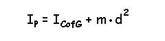
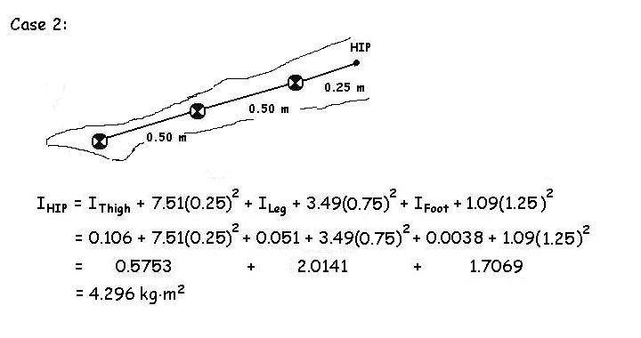

Moment of Inertia (Continued)
Parallel Axis Theorem:
Notice from the Table on the previous page that the radius of gyration is smaller in the CofG column than in either the Proximal or Distal columns. This is due to the fact that the moment of inertia of all objects is least when the axis is the CofG. As we attempt to rotate an object about an axis that moves away from the CofG, the resistance to angular motion increases. We can calculate this increase with the "Parallel Axis Theorem".

The above equation states that the moment of inertia about any point (P) is equal to the moment of inertia about the CofG plus an amount that is equal to the mass times the square of the distance from P to CofG. If we look back to the example of the hypothetical segment of the two masses that we first looked at, we can see that the CofG is half way between and that the moment of inertia about the CofG is.

Often, we need to know the moment of inertia of multi-linked segments about an axis. In the example below we will find the moment of inertia about the hip of the lower extremity in two different positions.

Notice that the moment of inertia of the thigh about the hip (0.5753) is less than the foot (0.6169) even though the mass of thigh is much greater. The reason is that the foot is further away from the hip than the thigh and the distance is very important. In Case 2, the limb is straight and the leg and foot have been moved even further from the axis.

With the limb straight, the moment of inertia about the hip is more than double that of the bent knee. Since moment of inertia is that property of a body that resists rotation, it is much more difficult for the hip muscles to produce rotation of a straight leg.